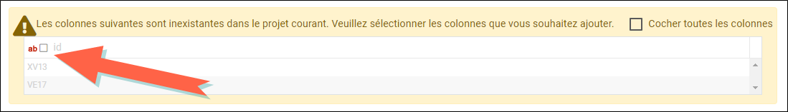

Mettre à jour le fichier de données
En cas de nouvelles réponses collectées, il est possible de mettre à jour l'étude en important les nouvelles données depuis différentes sources : fichier CSV, fichier XLSX, fichier SPSS, fichier Triple-S ou encore depuis une enquête Sphinx iQ (archive .zip).
Pour mettre à jour le fichier de données :
-
Accédez à la partie Données, onglet Import de fichier, puis cliquez sur la source à utiliser.
-
Cliquez par la suite sur le bouton Sélectionner le fichier... pour ajouter votre fichier de données.
REMARQUE : Les variables inexistantes dans l'étude courante peuvent être rajoutées. Pour ce faire, il suffit de cocher les colonnes (variables) à intégrer dans l'étude.

-
Sélectionnez la méthode à utiliser pour mettre à jour votre fichier de données :
-
Remplacer les données existantes : L'ensemble des données existant est remplacé par les données importées.
Cette méthode permet de supprimer toutes les données actuellement présentes dans l'étude et de les remplacer entièrement par les nouvelles données que vous importez. Cela signifie que les anciennes données seront perdues et uniquement les nouvelles données seront conservées.
EXEMPLE : Imaginons que votre étude actuelle contient des réponses collectées en janvier. Vous avez maintenant un nouveau fichier contenant des réponses collectées en février. En choisissant cette option, toutes les réponses de janvier seront supprimées et seules les réponses de février seront importées et visibles dans votre étude.
-
Ajouter aux données existantes : L'ensemble des données importées est ajouté aux données existantes.
Cette méthode ajoute les nouvelles données importées aux données existantes dans l'étude sans supprimer les anciennes données. Cela permet de combiner les anciennes et les nouvelles réponses dans un seul ensemble de données.
EXEMPLE : Supposons que vous avez actuellement 100 réponses dans votre étude. Vous importez un nouveau fichier avec 50 réponses supplémentaires. Après l'importation, l'étude contiendra un total de 150 réponses, combinant les 100 anciennes réponses avec les 50 nouvelles.
-
Mettre à jour les données existantes (en utilisant une variable pivot) : Les observations dont la valeur pivot est détectée sont mises à jour, les observations dont la valeur pivot n'existe pas dans les données existantes sont ajoutées.
Cette méthode permet de mettre à jour les données existantes dans l'étude en utilisant une variable spécifique, appelée variable pivot, pour identifier les observations à mettre à jour. Les observations dans le nouveau fichier de données qui correspondent aux valeurs de la variable pivot dans l'étude existant seront mises à jour. Les nouvelles observations dont les valeurs de la variable pivot ne sont pas présentes dans les données existantes seront ajoutées comme de nouvelles observations.
EXEMPLE : Prenons une étude avec des réponses identifiées par une variable "ID_client" unique. Votre étude contient actuellement des réponses avec des "ID_client" allant de 1 à 100. Vous importez un fichier contenant des réponses mises à jour pour les "ID_client" de 90 à 100 et de nouvelles réponses pour les "ID_client" de 101 à 150. En utilisant cette option, les réponses pour les "ID_client" de 90 à 100 seront mises à jour avec les nouvelles informations, et les réponses pour les "ID_client" de 101 à 150 seront ajoutées comme de nouvelles observations.
-
- Cliquez sur le bouton Mettre à jour l'étude pour finaliser l'import.